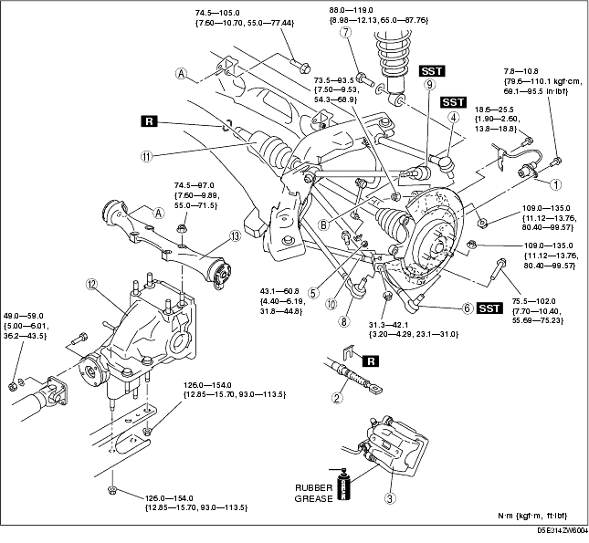
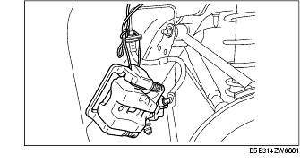
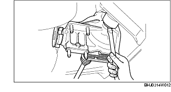
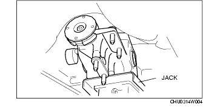
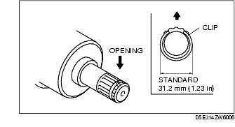

Workshop Manual ➭ DRIVELINE/AXLE ➭ DIFFERENTIAL ➭ REAR DIFFERENTIAL REMOVAL/INSTALLATION
REAR DIFFERENTIAL REMOVAL/INSTALLATION
id031400800400
{: #wp1059778}
Caution
• Performing the following procedures without first removing the ABS wheel-speed sensor may possibly cause an open circuit in the wiring harness if it is pulled by mistake. Before performing the following procedures, remove the ABS wheel-speed sensor (axle side) and fix it to an appropriate place where the sensor will not be pulled by mistake while servicing the vehicle.
-
Drain the rear differential oil.
-
Remove the middle pipe. (See EXHAUST SYSTEM REMOVAL/INSTALLATION [L8, LF].)
-
Remove the propeller shaft. (See PROPELLER SHAFT REMOVAL/INSTALLATION.)
-
Remove the power plant frame. (See TRANSMISSION REMOVAL/INSTALLATION [M15M-D].) (See TRANSMISSION REMOVAL/INSTALLATION [P66M-D].) (See AUTOMATIC TRANSMISSION REMOVAL/INSTALLATION [SJ6A-EL].)
-
Remove in the order indicated in the table.
-
Install in the reverse order of removal.
-
Add rear differential oil. (See DIFFERENTIAL OIL REPLACEMENT.)

|
ABS wheel-speed sensor {: #wp1059949} |
|
|---|---|
|
2 {: #wp1059987} |
Parking brake cable {: #wp1059990} |
|
3 {: #wp1059994} |
Brake caliper component {: #wp1059997} (See Brake Caliper Component Removal Note.) {: #wp1060034} |
|
4 {: #wp1060046} |
Rear lateral link (upper) ball joint {: #wp1060049} (See Rear Lateral Link (Upper) Ball Joint Removal Note.) {: #wp1060067} |
|
5 {: #wp1060079} |
Stabilizer control link (lower) {: #wp1060082} (See Stabilizer Control Link Installation Note.) {: #wp1060102} |
|
6 {: #wp1060114} |
Rear lateral link (lower) ball joint {: #wp1060117} (See Rear Lateral Link (Lower) Ball Joint Removal Note.) {: #wp1060139} |
|
7 {: #wp1060151} |
Shock absorber bolt (lower) {: #wp1060154} |
|
8 {: #wp1060176} |
Toe control link ball joint {: #wp1060179} |
|
9 {: #wp1060201} |
Rear trailing link (upper) ball joint {: #wp1060204} (See Rear Trailing Link (Upper) Ball Joint Removal Note.) {: #wp1060228} |
|
10 {: #wp1060240} |
Rear trailing link (lower) {: #wp1060243} |
|
11 {: #wp1060267} |
Rear drive shaft, rear knuckle component {: #wp1060270} (See Rear Drive Shaft, Rear Knuckle Component Removal Note.) {: #wp1060296} (See Rear Drive Shaft, Rear Knuckle Component Installation Note.) {: #wp1060310} |
|
12 {: #wp1060322} |
Rear differential {: #wp1060325} (See Rear Differential Removal/Installation Note.) {: #wp1060355} |
|
13 {: #wp1060367} |
Differential mount {: #wp1060370} |
Brake Caliper Component Removal Note
- Suspend the brake calliper component using a cable or equivalent.{: #wp1060444}

- Temporarily tighten the wheel nut to prevent the disc plate from falling off.
Rear Drive Shaft, Rear Knuckle Component Removal Note
- Insert a tire lever or equivalent between the rear differential and differential side outer ring, and remove the rear drive shaft.{: #wp1060491}

Caution
• The sharp edges of the drive shaft can slice or puncture the oil seal. Be careful not to damage the oil seal when removing the drive shaft from the differential.
-
Pull the rear drive shaft and rear knuckle component to the outer side, and detach the rear drive shaft from the rear differential.
-
To hold the rear drive shaft and rear knuckle component, install the rear lateral link (upper) to the rear knuckle temporarily after disconnecting the rear drive shaft.
Rear Differential Removal/Installation Note
Warning
• If the rear differential falls off, it can cause serious injuries or death, and damage to the vehicle. When removing/installing the rear differential, verify that it is supported securely with a jack.
- Remove or install the rear differential, while supporting it securely with a jack, and moving the jack gradually.{: #wp1060598}

Rear Drive Shaft, Rear Knuckle Component Installation Note
- Install a new drive shaft clip to the clip groove at the top of the rear drive shaft with the clip opening facing upward and the clip width within the specification.{: #wp1060635}

Standard31.2 mm {1.23 in}
-
After installing the clip, measure the outer diametric if it exceeds the specification, reinstall a new clip.
-
Apply differential oil to the differential oil seal lip.
Caution
• The sharp edges of the rear drive shaft can slice or puncture the oil seal Be careful not to damage the oil seal when installing the rear drive shaft from the rear differential.
-
Insert the rear drive shaft into the rear differential with the clip opening facing upward.
-
After installation, verify that the rear drive shaft is securely held by the clip by pulling the outer ring on the differential side towards the axle.